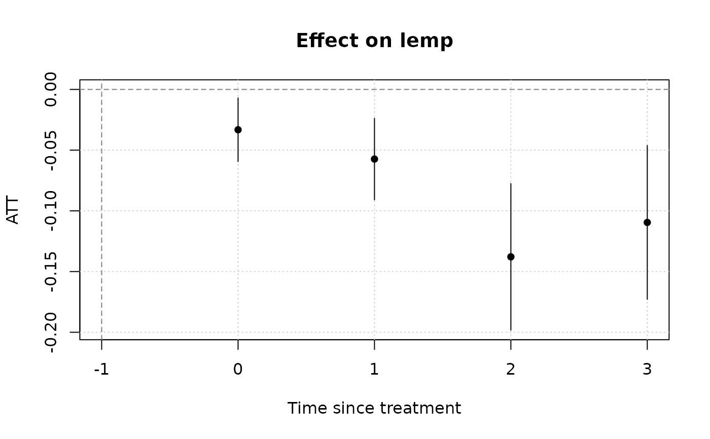
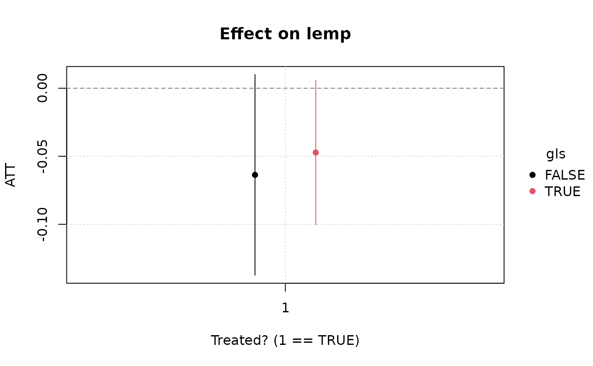
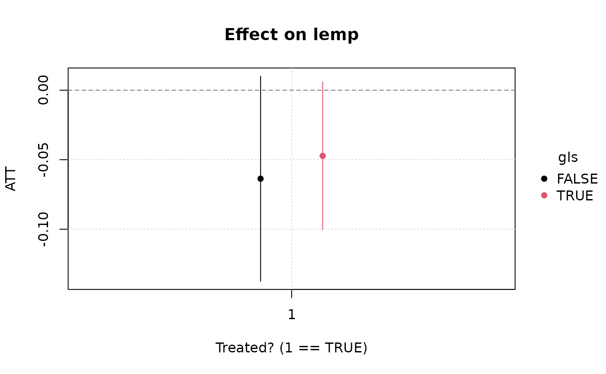

Estimates an "extended" two-way fixed effects regression, with fully
saturated interaction effects a la Wooldridge (2021, 2023). At its heart,
etwfe is a convenience function that automates a number of tedious and
error prone preparation steps involving both the data and model formulae.
Computation is passed on to the feols (linear) /
feglm (nonlinear) functions from the fixest
package. etwfe should be paired with its companion emfx function.
Usage
etwfe(
fml = NULL,
tvar = NULL,
gvar = NULL,
data = NULL,
ivar = NULL,
xvar = NULL,
tref = NULL,
gref = NULL,
cgroup = c("notyet", "never"),
fe = NULL,
family = NULL,
...
)Arguments
- fml
A two-side formula representing the outcome (lhs) and any control variables (rhs), e.g.
y ~ x1 + x2. If no controls are required, the rhs must take the value of 0 or 1, e.g.y ~ 0.- tvar
Time variable. Can be a string (e.g., "year") or an expression (e.g., year).
- gvar
Group variable. Can be either a string (e.g., "first_treated") or an expression (e.g., first_treated). In a staggered treatment setting, the group variable typically denotes treatment cohort.
- data
The data frame that you want to run ETWFE on.
- ivar
Optional index variable. Can be a string (e.g., "country") or an expression (e.g., country). Leaving as NULL (the default) will result in group-level fixed effects being used, which is more efficient and necessary for nonlinear models (see
familyargument below). However, you may still want to cluster your standard errors by your index variable through thevcovargument. See Examples below.- xvar
Optional interacted categorical covariate for estimating heterogeneous treatment effects. Enables recovery of the marginal treatment effect for distinct levels of
xvar, e.g. "child", "teenager", or "adult". Note that the "x" prefix in "xvar" represents a covariate that is interacted with treatment, as opposed to a regular control variable.- tref
Optional reference value for
tvar. Defaults to its minimum value (i.e., the first time period observed in the dataset).- gref
Optional reference value for
gvar. You shouldn't need to provide this if yourgvarvariable is well specified. But providing an explicit reference value can be useful/necessary if the desired control group takes an unusual value.- cgroup
What control group do you wish to use for estimating treatment effects. Either "notyet" treated (the default) or "never" treated.
- fe
What category of fixed effects should be used? One of either
"vs"(varying slopes),"feo"(fixed effects only), or"none"(no fixed effects whatsoever). If left asNULL(i.e., no explicit choice) then will default to"vs"for linear/Gaussian models, since this is the most efficient estimation option and further limits the number of "nuisance" parameters in the return model object. However, for non-Gaussian families will default to"none", since the downstreamemfxfunction cannot compute standard errors for these models in the presence of fixed-effects. (See: https://github.com/vincentarelbundock/marginaleffects/issues/1487) Please note that the primary treatment parameters of interest should remain unchanged regardless offeargument choice.- family
Which
familyto use for the estimation. Defaults to NULL, in which casefixest::feolsis used. Otherwise passed tofixest::feglm, so that valid entries include "logit", "poisson", and "negbin". Note that if a non-NULL family entry is detected,ivarwill automatically be set to NULL.- ...
Additional arguments passed to
fixest::feols(orfixest::feglm). The most common example would be avcovargument.
Value
A fixest object with fully saturated
interaction effects, and a few additional attributes used for
post-estimation in emfx.
Heterogeneous treatment effects
Specifying etwfe(..., xvar = <xvar>) will generate interaction effects
for all levels of <xvar> as part of the main regression model. The
reason that this is useful (as opposed to a regular, non-interacted
covariate in the formula RHS) is that it allows us to estimate
heterogeneous treatment effects as part of the larger ETWFE framework.
Specifically, we can recover heterogeneous treatment effects for each
level of <xvar> by passing the resulting etwfe model object on to
emfx().
For example, imagine that we have a categorical variable called "age" in
our dataset, with two distinct levels "adult" and "child". Running
emfx(etwfe(..., xvar = age)) will tell us how the efficacy of treatment
varies across adults and children. We can then also leverage the in-built
hypothesis testing infrastructure of marginaleffects to test whether
the treatment effect is statistically different across these two age
groups; see Examples below. Note the same principles carry over to
categorical variables with multiple levels, or even continuous variables
(although continuous variables are not as well supported yet).
Performance tips
Under most situations, etwfe should complete very quickly. For its part,
emfx is quite performant too and should take a few seconds or less for
datasets under 100k rows. However, emfx's computation time does tend to
scale non-linearly with the size of the original data, as well as the
number of interactions from the underlying etwfe model. Without getting
too deep into the weeds, the numerical delta method used to recover the
ATEs of interest has to estimate two prediction models for each
coefficient in the model and then compute their standard errors. So, it's
a potentially expensive operation that can push the computation time for
large datasets (> 1m rows) up to several minutes or longer.
Fortunately, there are two complementary strategies that you can use to
speed things up. The first is to turn off the most expensive part of the
whole procedure—standard error calculation—by calling emfx(..., vcov = FALSE). Doing so should bring the estimation time back down to a few
seconds or less, even for datasets in excess of a million rows. While the
loss of standard errors might not be an acceptable trade-off for projects
where statistical inference is critical, the good news is this first
strategy can still be combined our second strategy. It turns out that
collapsing the data by groups prior to estimating the marginal effects can
yield substantial speed gains of its own. Users can do this by invoking
the emfx(..., collapse = TRUE) argument. While the effect here is not as
dramatic as the first strategy, our second strategy does have the virtue
of retaining information about the standard errors. The trade-off this
time, however, is that collapsing our data does lead to a loss in accuracy
for our estimated parameters. On the other hand, testing suggests that
this loss in accuracy tends to be relatively minor, with results
equivalent up to the 1st or 2nd significant decimal place (or even
better).
Summarizing, here's a quick plan of attack for you to try if you are worried about the estimation time for large datasets and models:
Estimate
mod = etwfe(...)as per usual.Run
emfx(mod, vcov = FALSE, ...).Run
emfx(mod, vcov = FALSE, collapse = TRUE, ...).Compare the point estimates from steps 1 and 2. If they are are similar enough to your satisfaction, get the approximate standard errors by running
emfx(mod, collapse = TRUE, ...).
References
Wooldridge, Jeffrey M. (2021). Two-Way Fixed Effects, the Two-Way Mundlak Regression, and Difference-in-Differences Estimators. Working paper (version: August 16, 2021). Available: http://dx.doi.org/10.2139/ssrn.3906345
Wooldridge, Jeffrey M. (2023). Simple Approaches to Nonlinear Difference-in-Differences with Panel Data. The Econometrics Journal, 26(3), C31-C66. Available: https://doi.org/10.1093/ectj/utad016
See also
fixest::feols(), fixest::feglm() which power the underlying
estimation routines. emfx is a companion function that handles
post-estimation aggregation to extract quantities of interest.
Examples
# \dontrun{
# We’ll use the mpdta dataset from the did package (which you’ll need to
# install separately).
# install.packages("did")
data("mpdta", package = "did")
#
# Basic example
#
# The basic ETWFE workflow involves two consecutive function calls:
# 1) `etwfe` and 2) `emfx`
# 1) `etwfe`: Estimate a regression model with saturated interaction terms.
mod = etwfe(
fml = lemp ~ lpop, # outcome ~ controls (use 0 or 1 if none)
tvar = year, # time variable
gvar = first.treat, # group variable
data = mpdta, # dataset
vcov = ~countyreal # vcov adjustment (here: clustered by county)
)
# mod ## A fixest model object with fully saturated interaction effects.
# 2) `emfx`: Recover the treatment effects of interest.
(mod_es = emfx(mod, type = "event")) # dynamic ATE a la an event study
#>
#> event Estimate Std. Error z Pr(>|z|) S 2.5 % 97.5 %
#> 0 -0.0332 0.0134 -2.48 0.013 6.3 -0.0594 -0.00702
#> 1 -0.0573 0.0171 -3.34 <0.001 10.2 -0.0910 -0.02373
#> 2 -0.1379 0.0308 -4.48 <0.001 17.0 -0.1982 -0.07753
#> 3 -0.1095 0.0323 -3.39 <0.001 10.5 -0.1729 -0.04620
#>
#> Term: .Dtreat
#> Type: response
#> Comparison: TRUE - FALSE
#>
# Etc. Other aggregation type options are "simple" (the default), "group"
# and "calendar"
# To visualize results, use the native plot method (see `?plot.emfx`)
plot(mod_es)

# Notice that we don't get any pre-treatment effects with the default
# "notyet" treated control group. Switch to the "never" treated control
# group if you want this.
etwfe(
lemp ~ lpop, tvar = year, gvar = first.treat, data = mpdta,
vcov = ~countyreal,
cgroup = "never" ## <= use never treated group as control
) |>
emfx("event") |>
plot()
 #
# Heterogeneous treatment effects
#
# Example where we estimate heterogeneous treatment effects for counties
# within the 8 US Great Lake states (versus all other counties).
gls = c("IL" = 17, "IN" = 18, "MI" = 26, "MN" = 27,
"NY" = 36, "OH" = 39, "PA" = 42, "WI" = 55)
mpdta$gls = substr(mpdta$countyreal, 1, 2) %in% gls
hmod = etwfe(
lemp ~ lpop, tvar = year, gvar = first.treat, data = mpdta,
vcov = ~countyreal,
xvar = gls ## <= het. TEs by gls
)
# Heterogeneous ATEs (could also specify "event", etc.)
emfx(hmod)
#>
#> .Dtreat gls Estimate Std. Error z Pr(>|z|) S 2.5 % 97.5 %
#> TRUE FALSE -0.0637 0.0376 -1.69 0.0905 3.5 -0.137 0.01005
#> TRUE TRUE -0.0472 0.0271 -1.74 0.0816 3.6 -0.100 0.00593
#>
#> Term: .Dtreat
#> Type: response
#> Comparison: TRUE - FALSE
#>
# To test whether the ATEs across these two groups (non-GLS vs GLS) are
# statistically different, simply pass an appropriate "hypothesis" argument.
emfx(hmod, hypothesis = "b1 = b2")
#>
#> Hypothesis Estimate Std. Error z Pr(>|z|) S 2.5 % 97.5 %
#> b1=b2 -0.0164 0.0558 -0.294 0.768 0.4 -0.126 0.093
#>
#> Type: response
#>
plot(emfx(hmod))

#
# Nonlinear model (distribution / link) families
#
# Poisson example
mpdta$emp = exp(mpdta$lemp)
etwfe(
emp ~ lpop, tvar = year, gvar = first.treat, data = mpdta,
vcov = ~countyreal,
family = "poisson" ## <= family arg for nonlinear options
) |>
emfx("event")
#> The variables '.Dtreat:first.treat::2006:year::2004', '.Dtreat:first.treat::2006:year::2005', '.Dtreat:first.treat::2007:year::2004', '.Dtreat:first.treat::2007:year::2005', '.Dtreat:first.treat::2007:year::2006', '.Dtreat:first.treat::2006:year::2004:lpop_dm' and 4 others have been removed because of collinearity (see $collin.var).
#>
#> event Estimate Std. Error z Pr(>|z|) S 2.5 % 97.5 %
#> 0 -25.35 15.9 -1.5957 0.11056 3.2 -56.5 5.79
#> 1 1.09 40.3 0.0271 0.97838 0.0 -77.9 80.07
#> 2 -75.12 23.2 -3.2445 0.00118 9.7 -120.5 -29.74
#> 3 -101.82 27.1 -3.7590 < 0.001 12.5 -154.9 -48.73
#>
#> Term: .Dtreat
#> Type: response
#> Comparison: TRUE - FALSE
#>
# }
#
# Heterogeneous treatment effects
#
# Example where we estimate heterogeneous treatment effects for counties
# within the 8 US Great Lake states (versus all other counties).
gls = c("IL" = 17, "IN" = 18, "MI" = 26, "MN" = 27,
"NY" = 36, "OH" = 39, "PA" = 42, "WI" = 55)
mpdta$gls = substr(mpdta$countyreal, 1, 2) %in% gls
hmod = etwfe(
lemp ~ lpop, tvar = year, gvar = first.treat, data = mpdta,
vcov = ~countyreal,
xvar = gls ## <= het. TEs by gls
)
# Heterogeneous ATEs (could also specify "event", etc.)
emfx(hmod)
#>
#> .Dtreat gls Estimate Std. Error z Pr(>|z|) S 2.5 % 97.5 %
#> TRUE FALSE -0.0637 0.0376 -1.69 0.0905 3.5 -0.137 0.01005
#> TRUE TRUE -0.0472 0.0271 -1.74 0.0816 3.6 -0.100 0.00593
#>
#> Term: .Dtreat
#> Type: response
#> Comparison: TRUE - FALSE
#>
# To test whether the ATEs across these two groups (non-GLS vs GLS) are
# statistically different, simply pass an appropriate "hypothesis" argument.
emfx(hmod, hypothesis = "b1 = b2")
#>
#> Hypothesis Estimate Std. Error z Pr(>|z|) S 2.5 % 97.5 %
#> b1=b2 -0.0164 0.0558 -0.294 0.768 0.4 -0.126 0.093
#>
#> Type: response
#>
plot(emfx(hmod))

#
# Nonlinear model (distribution / link) families
#
# Poisson example
mpdta$emp = exp(mpdta$lemp)
etwfe(
emp ~ lpop, tvar = year, gvar = first.treat, data = mpdta,
vcov = ~countyreal,
family = "poisson" ## <= family arg for nonlinear options
) |>
emfx("event")
#> The variables '.Dtreat:first.treat::2006:year::2004', '.Dtreat:first.treat::2006:year::2005', '.Dtreat:first.treat::2007:year::2004', '.Dtreat:first.treat::2007:year::2005', '.Dtreat:first.treat::2007:year::2006', '.Dtreat:first.treat::2006:year::2004:lpop_dm' and 4 others have been removed because of collinearity (see $collin.var).
#>
#> event Estimate Std. Error z Pr(>|z|) S 2.5 % 97.5 %
#> 0 -25.35 15.9 -1.5957 0.11056 3.2 -56.5 5.79
#> 1 1.09 40.3 0.0271 0.97838 0.0 -77.9 80.07
#> 2 -75.12 23.2 -3.2445 0.00118 9.7 -120.5 -29.74
#> 3 -101.82 27.1 -3.7590 < 0.001 12.5 -154.9 -48.73
#>
#> Term: .Dtreat
#> Type: response
#> Comparison: TRUE - FALSE
#>
# }